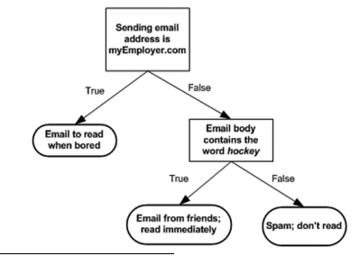
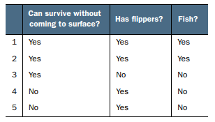

<!DOCTYPE html>
<html>
<head>
	<title> Splitting datasets one
        feature at a time:
        decision trees
       </title>
	<link rel="stylesheet" href="https://cdn.jsdelivr.net/npm/bootstrap@4.0.0/dist/css/bootstrap.min.css" integrity="sha384-Gn5384xqQ1aoWXA+058RXPxPg6fy4IWvTNh0E263XmFcJlSAwiGgFAW/dAiS6JXm" crossorigin="anonymous">
    <script src="https://cdnjs.cloudflare.com/ajax/libs/prism/9000.0.1/prism.min.js" integrity="sha512-UOoJElONeUNzQbbKQbjldDf9MwOHqxNz49NNJJ1d90yp+X9edsHyJoAs6O4K19CZGaIdjI5ohK+O2y5lBTW6uQ==" crossorigin="anonymous" referrerpolicy="no-referrer"></script>
	<script src="https://cdnjs.cloudflare.com/ajax/libs/prism/9000.0.1/components/prism-actionscript.min.js" integrity="sha512-YSZLJbdXeh9n0X0aJAuJUk8ArMBEu1F0LQPeiydyVXUMlJ2QZPAFzp/84lkxk9M0NpTJ5aSEUTlbsC4UoUpwYw==" crossorigin="anonymous" referrerpolicy="no-referrer"></script>
    <link rel="stylesheet" href="https://cdnjs.cloudflare.com/ajax/libs/prism-themes/1.9.0/prism-a11y-dark.min.css" integrity="sha512-bd1K4DEquIavX49RSZHIE0Ye6RFOVlGLhtGow9KDbLYqOd/ufhshkP0GoJoVR1jqj7FmOffvVIKuq1tcXlN9ZA==" crossorigin="anonymous" referrerpolicy="no-referrer" />
    <link rel="stylesheet" href="style.css">
	<style>
		body {
			font-family: Arial, sans-serif;
			padding: 20px;
			max-width: 800px;
			margin: 0 auto;
		}
		h1 {
			font-size: 36px;
			margin-bottom: 20px;
		}
        .note {
            background-color: #fff;
            padding: 20px;
            border-radius: 8px;
            box-shadow: 0 2px 4px rgba(0, 0, 0, 0.1);
            text-align: center;
        }
		h2 {
			font-size: 28px;
			margin-top: 40px;
			margin-bottom: 10px;
		}
		p {
			font-size: 16px;
			line-height: 1.5;
			margin-bottom: 20px;
		}
		img {
			max-width: 100%;
			margin-bottom: 20px;
		}
	</style>
</head>
<body>
	<header>
		
		<h1>  Splitting datasets one
            feature at a time:
            decision trees
           </h1>
		<p>Posted on March 15, 2022 by Zulqarnain</p>
	</header>
	
	<main>
		<section>
			<h2>Introduction</h2>
            
 decision trees <br>
    </section>
		

<section>
    <p>
        Have you ever played a game called Twenty Questions? If not, the game works like
        this: One person thinks of some object and players try to guess the object. Players
        are allowed to ask 20 questions and receive only yes or no answers. In this game, the
        people asking the questions are successively splitting the set of objects they can
        deduce. A decision tree works just like the game Twenty Questions; you give it a
        bunch of data and it generates answers to the game.
    </p>	
<p>
    The decision tree is one of the most commonly used classification techniques;
recent surveys claim that it’s the most commonly used technique.1
 You don’t have to know much about machine learning to understand how it works.
 </p> 
 
 <p>If you’re not already familiar with decisions trees, the concept is straightforward.
Chances are good that you’ve already seen a decision tree without knowing it. Figure 
shows a flowchart, which is a decision tree. It has decision blocks (rectangles) and terminating blocks (ovals) where some conclusion has been reached. The right and left arrows
coming out of the decision blocks are known as branches, and they can lead to other decision blocks or to a terminating block. In this particular example, I made a hypothetical
email classification system, which first checks the domain of the sending email address.
If this is equal to myEmployer.com, it will classify the email as “Email to read when
bored.”
</p>
<p> If it isn’t from that domain, it checks to see if the body of the email contains the
word hockey. If the email contains the word hockey, then this email is classified as “Email
from friends; read immediately”; if the body doesn’t contain the word hockey, then it gets
classified as “Spam; don’t read.”
</p>

<div class="note">
    <h1 style="color: brown;">Decision trees</h1>
    <p style="color: black;">
        
        <strong>Pros</strong>: Computationally cheap to use, easy for humans to understand learned results,
        missing values.
        <br>
        <strong>Cons</strong>: Prone to overfitting
        <br>
        <strong>Works with</strong>: Numeric values, nominal values</p>
</div>
</section>

<section>
<p>
    Now that you know a little of what decision trees are good for, we’re going to get into
the process of building them from nothing but a pile of data. In the first section, we’ll
discuss methods used to construct trees and start writing code to construct a tree.
<br>
Next, we’ll address some metrics that we can use to measure the algorithm’s success.
Finally, we’ll use recursion to build our classifier and plot it using Matplotlib. When
we have the classifier working, we’ll take some data of a contact lens prescription and
use our classifier to try to predict what lenses people will need. 
</p>
</section>
<section>
    <p>To build a decision tree, you need to make a first decision on the dataset to dictate
        which feature is used to split the data. To determine this, you try every feature and measure which split will give you the best results. After that, you’ll split the dataset into subsets. The subsets will then traverse down the branches of the first decision node. If the
        data on the branches is the same class, then you’ve properly classified it and don’t need
        to continue splitting it. If the data isn’t the same, then you need to repeat the splitting
        process on this subset.</p>
        <pre>
			<code class="language-javascript">
				    """"
                    Check if every item in the dataset is in the same class:
                    If so return the class label
                    Else 
                    find the best feature to split the data
                    split the dataset 
                    create a branch node
                    for each split
                    call createBranch and add the result to the branch node
                    return branch node
				
			</code>
			</pre>
  
</section>
<section>
    <div class="note">
        <h1 style="color: brown;">General approach to decision trees</h1>
        <p style="color: black;">  
<div style="color: black;">    
<li> Collect: Any method.</li>
<li> Prepare: This tree-building algorithm works only on nominal values</li>
<li> Analyze: Any method. You should visually inspect the tree after it is built</li> 
<li> Train: Construct a tree data structure. </li>
<li> Test: Calculate the error rate with the learned tree.</li>
<li> Use: This can be used in any supervised learning task.</li>
</div>
</p>

    </div>
</section>
<section>
    <p>
        See the data in table . It contains five animals pulled from the sea and asks if
        they can survive without coming to the surface and if they have flippers. We would like
        to classify these animals into two classes: fish and not fish. Now we want to decide
        whether we should split the data based on the first feature or the second feature. To
        answer this question, we need some quantitative way of determining how to split the
        data. We’ll discuss that next. 
    </p>
    
</section>
<section>
    <p>
        The change in information before and after the split is known as the information
gain. When you know how to calculate the information gain, you can split your data
across every feature to see which split gives you the highest information gain. The split
with the highest information gain is your best option. 
 Before you can measure the best split and start splitting our data, you need to
know how to calculate the information gain. The measure of information of a set is
known as the Shannon entropy, or just entropy for short. Its name comes from the father
of information theory, Claude Shannon.
    </p>
</section>
<section>
    <pre>
        <code class="language-javascript">
                """"
                from math import log
                def calcShannonEnt(dataSet):
                    numEntries = len(dataSet)
                    labelCounts = {}
                    for featVec in dataSet: 
                        currentLabel = featVec[-1] 
                        if currentLabel not in labelCounts.keys():
                            labelCounts[currentLabel] = 0 
                            labelCounts[currentLabel] += 1 
                            shannonEnt = 0.0
                        for key in labelCounts:
                            prob = float(labelCounts[key])/numEntries
                            shannonEnt -= prob * log(prob,2) 
                    return shannonEnt
              
        </code>
        </pre>

</section>
</main>
    
</body>
</html>